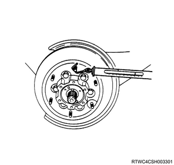
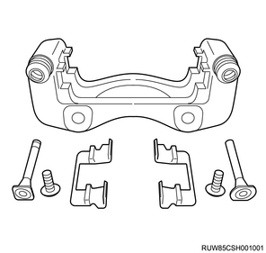
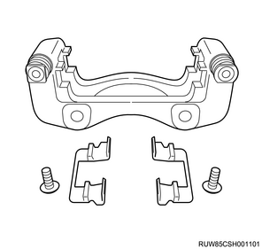
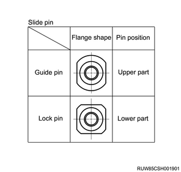
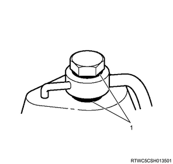
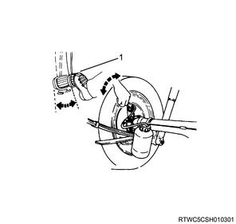

Front disc brake installation (All models)
1. Front hub rotor assembly installation
1. Fill the grease in the front hub rotor assembly.
Note
- Fill the front hub and hub cap with grease.
Amount of filling： 35 g { 1.23 oz } Hub
Application quantity： 15 g { 0.53 oz } Inner bearing
Application quantity： 10 g { 0.35 oz } Outer bearing
2. Install the front hub rotor assembly to the knuckle.

- Outer bearing
- Inner bearing
- Hub
- Hub cap
2. Bearing lock nut installation
1. Install the bearing lock nut to the knuckle using special tool.
Note
- By using a hub nut wrench, install so that the truncated section in the screw hole faces the outside.

SST: 5-8840-2117-0 - hub nut wrench

3. Front hub rotor assembly adjustment
1. Adjust the preload to a standard value.
Note
- Adjust the preload for the front hub bearing.
- After tightening the bearing lock nut to the specified torque of the nut, fully loosen the nut.
Tightening torque： 29 N・m { 3.0 kgf・m / 21 lb・ft }
Note
- Hook a spring scale to the wheel pin, and gently pull it in a tangent direction. Make adjustments by tightening the bearing lock nut until the preload reaches the specified value.
Preload： 20.0 to 25.0 N { 2.0 to 2.5 kg / 4.5 to 5.6 lb } New bearing, new oil seal
Preload： 12.0 to 18.0 N { 1.2 to 1.8 kg / 2.7 to 4.0 lb } Reused bearing, new oil seal
Note
- If the preload of the front hub bearing is different from the specified value, adjust it by tightening or loosening the bearing lock nut.

4. Lock washer installation
1. Install the lock washer to the bearing lock nut.
Note
- Install it in such a way that the side with the larger taper hole diameter faces the outside of the vehicle.
- If the lock washer screw hole does not align with the corresponding hole of the bearing lock nut, turn the lock washer over.
- If the hole positions still do not align, turn the bearing lock nut in the tightening direction to adjust the hole positions to best alignment.
- Tighten the lock washer installation screw securely so that the screw head is lower than the washer surface.

5. Flange installation
Note
- The following applies to the 4WD vehicles.
1. Install the flange to the front hub.
Note
- Apply liquid gasket to the flange installation surface and install the flange to the hub.
- Liquid gasket: LOCTITE 515 or equivalent
- Install the snap ring and shim.
2. Adjust the shim.
Note
- Adjust the clearance between the flange and snap ring with the shim.
Standard： 0.0 to 0.2 mm { 0.000 to 0.008 in }
| Types of adjust shims |
| ： 0.2 mm { 0.008 in } |
| ： 0.3 mm { 0.012 in } |
| ： 0.5 mm { 0.020 in } |
| ： 1.0 mm { 0.039 in } |

6. Hub cap installation
1. Install the hub cap to the front hub.
Note
- Install the hub cap to the front hub with bolts.
Tightening torque： 59 N・m { 6.0 kgf・m / 44 lb・ft }

7. Guide pin installation
Note
- Apply rubber grease NIGLUBE RX-2 or equivalent to the portions of the boot and guide pin as shown in the diagram.
- Apply rubber grease NIGLUBE RX-2 or equivalent to the inside of the boot.
Caution
- Do not use mineral grease.

1. Install the boot to the brake support.
Note
- Install it firmly to the brake support groove.

2. Install the guide pin to the brake caliper assembly.

Note
- Install the guide pin boot securely to the guide pin groove.
- Pull out the guide pin slightly and confirm that the boot is securely installed to the cylinder body groove.
- Move the guide pin to spread rubber grease over the brake support groove.
Caution
- Do not mix up the upper and lower sides of the guide pin.

8. Brake support installation
1. Install the brake support to the knuckle.
Tightening torque： 205 to 245 N・m { 20.9 to 25.0 kgf・m / 151 to 181 lb・ft }
Note
- After installing the brake support, install the clip and pad.

9. Disc brake pad installation
1. Install the disc brake pad to the brake support.
Note
- After installing the clip, install the pad assembly attached with the shim.
- Install a new one as necessary.
10. Brake caliper assembly installation
1. Install the brake caliper assembly to the brake support.
2. Install the lock bolt to the brake caliper assembly.
Tightening torque： 32 to 42 N・m { 3.3 to 4.3 kgf・m / 24 to 31 lb・ft }

11. Brake hose connect
1. Install the brake hose to the brake caliper assembly.
Note
- Install the bolt and a new gasket.
Tightening torque： 29 to 39 N・m { 3.0 to 4.0 kgf・m / 21 to 29 lb・ft }

- Gasket
Note
- After the installation, conduct air removal.
Caution
- Make sure to use a new gasket.
- Insert the brake hose end into the stopper hole.
- Before the installation, completely remove dust and foreign material from the bolt, screw on the brake side surface, and sealing surface.
12. Brake fluid air bleed
Note
- Filling up the reservoir tank
Caution
- Use only the specified brake fluid.
- Do not use any brake fluid that contains petroleum components.
Note
- Doing so may cause expansion or distortion of the rubber parts in the hydraulic brake system.
Caution
- Do not use any brake fluid container that contains petroleum components or that is wet with water.
Note
- If water mixes in the brake fluid, its boiling point decreases.
- Put a cover on every container to prevent contaminations.
Caution
- Refill the fluid in the reservoir tank when the engine is cold.
- Be careful never to spill the brake fluid on painted surfaces because the fluid will damage the paint.
- Refill the fluid in the reservoir tank to the MAX mark to prevent air from mixing in.
- Be careful for the fluid not to overflow.
- Clean the reservoir tank before removing the cap to prevent dirt, etc. from entering the tank.
Note
- Refill the brake fluid to the MAX mark of the reservoir tank as necessary.
- Use the brake fluid DOT3.
- Brake fluid leakage
- With the engine idling, set the shift lever to neutral, and continue depressing the brake pedal with a constant amount of pressure.
- If the pedal stroke gradually increases, there may be fluid leakage in the oil pressure system.
- Visually check for oil leakage.
- Air removal from the oil pressure system
- Air entering the brake pipe will cause an insufficient brake operation.
- In the case of using the brake in a condition where the fluid level in the reservoir tank is extremely low, or removing the brake pipe, conduct air removal.
- The air removal work requires cooperation between 2 operators.
- Be sure to engage the parking brake during the air removal work.
Caution
- Conduct the air removal work with the engine started to protect damage to the push rod seal, and secure adequate ventilation.
- Maintain the fluid in the reservoir tank at the specified level before starting the air removal work.
- When bleeding air, start with the rear wheel cylinder or rear caliper furthest from the master cylinder.
Note
- The air removal work is necessary to remove the air when the air enters the oil pressure system.
- In a condition where the brake fluid level has dropped or when the air entered the fluid after removing the brake pipe from the master cylinder, air removal may be needed for all brakes at 4 locations.
- When brake pipes have been removed from any one brake, air bleeding must be performed for that wheel cylinder or caliper.
- When the piping between the master cylinder and one of the brakes is removed, air removal is needed for the brake system operating with the removed pipe.
1. Apply the parking brake.
Note
- Pull the parking brake lever to a full extent.
2. Start the engine.
Caution
- Be careful not to conduct the air removal work with the engine stopped. Doing so will damage the vacuum booster.
3. Remove the cap from the reservoir tank.
4. Replenish the reservoir tank with the brake fluid.
Note
- The brake fluid tank is shared with the clutch fluid tank.
- As the amount of the fluid is different between the brake compartment and clutch compartment depending on the partition inside the tank, check the amount of brake fluid in the brake compartment.
Caution
- During the air removal work, keep filling the reservoir tank at least half full with the fluid.
- Be sure to refill new brake fluid.
- When refilling the fluid, be careful for the air not to enter the fluid.

- MAX level
- MIN level
- Brake fluid compartment
Note
- When removing, installing, or replacing the master cylinder, first drain the air from the master cylinder and then from each wheel cylinder and caliper in accordance with the following procedures.
- Air removal from the brake master cylinder
5. Disconnect the brake pipe from the brake master cylinder.

- Rear brake pipe
- Front brake pipe
Note
- Remove the rear brake pipe.
- Inspect the fluid level and refill the fluid as necessary.
- If the fluid is refilled, leave the system as it is for at least 1 minute.
6. Operate the brake pedal.
Note
- Slowly depress the brake pedal once and hold it down.
- Use a finger to completely plug the outlet of the master cylinder that is removed from the brake pipe, and slowly release the brake pedal.
- Remove the finger from the outlet after the brake pedal has been completely returned.
- Repeat the process mentioned above until the brake fluid comes out overflowing from the outlet.
Caution
- Be careful that the fluid level in the reservoir tank does not drop below the intermediate level indication.
7. Connect the brake pipe to the brake master cylinder.
Note
- Connect the rear brake pipe.
- Slowly depress the brake pedal once and hold it down.
- Loosen the rear brake pipe.
- Tighten the brake pipe again and slowly return the brake pedal.
- Repeat steps 5 to 7 mentioned above until air does not come out form the outlet when the brake pipe is loosened.
Caution
- Be careful never to spill the brake fluid on painted surfaces because the fluid will damage the paint.
Note
- Repeat steps 5 to 7 to remove air from the front brake pipe.
- Rear brake pipe
- Front brake pipe
Note
- Air removal from the wheel cylinder or caliper
8. Drain air from the brake caliper assembly.
Note
- Remove air from each wheel in the following order.
- Right rear caliper or right rear wheel cylinder
- Left rear caliper or left rear wheel cylinder
- Left front caliper
- Right front caliper
- If the brake fluid does not come out, it shows that air has entered the master cylinder.
- In this case, follow steps 5 to 7 to remove air from the master cylinder.
- Apply an appropriate wrench to the bleeder screw.
9. Connect the tube to the bleeder screw.
Note
- Connect a transparent tube to the bleeder screw and put the other end of the tube into a transparent container containing the brake fluid.

10. Operate the brake pedal.
Note
- Slowly depress the brake pedal 3 times with a speed of once per second and hold it down.

- Brake pedal
Note
- Loosen the bleeder screw until the brake fluid flows in the tube.
- Tighten the bleeder screw.
- Slowly return the brake pedal.
- Repeat steps 9 and 10 until air is completely removed.
- Repeat the air removal procedures at least 10 times for the front wheel and at least 15 times for the rear wheel.
Caution
- After air removal of each wheel, be sure to confirm the fluid level in the reservoir tank.
Note
- When air removal of all wheels is completed, depress the brake pedal and check for a feeling of stepping on a sponge.
- If the feeling of stepping on a sponge exists, the air removal procedures need to be repeated.
11. Replenish the reservoir tank with the brake fluid.
Note
- Refill the fluid to the MAX mark as necessary.
12. Install the cap to the reservoir tank.
13. Stop the engine.
Note
- Brake pipe and brake hose
- Inspect all pipes and hoses for worn, bent, damage, cracks, or dents.
- If any abnormality is found, conduct a necessary repair or replacement.
Caution
- Pay attention to all joint sections of pipes and hoses, which are vulnerable to damage.
- Be careful not to extremely twist or bend the hose during work, and not to damage the brake pipe when repairing or replacing the axles, suspensions, etc.
Note
- Conduct leakage inspections with the brake pedal fully depressed.
Caution
- If leakage is found around the joint section, conduct re-tightening or replacement.
- Be sure to implement these procedures when installing the brake pipe.
- After removing the pipe and hose, cover the opening with a plug or tape to prevent foreign objects from entering.
13. Disc wheel installation
1. Install the disc wheel to vehicle.
Note
- Install the wheel nuts in the numbered order.
Tightening torque: 120 N⋅m {12.0 kgf⋅m/87 lb⋅ft}